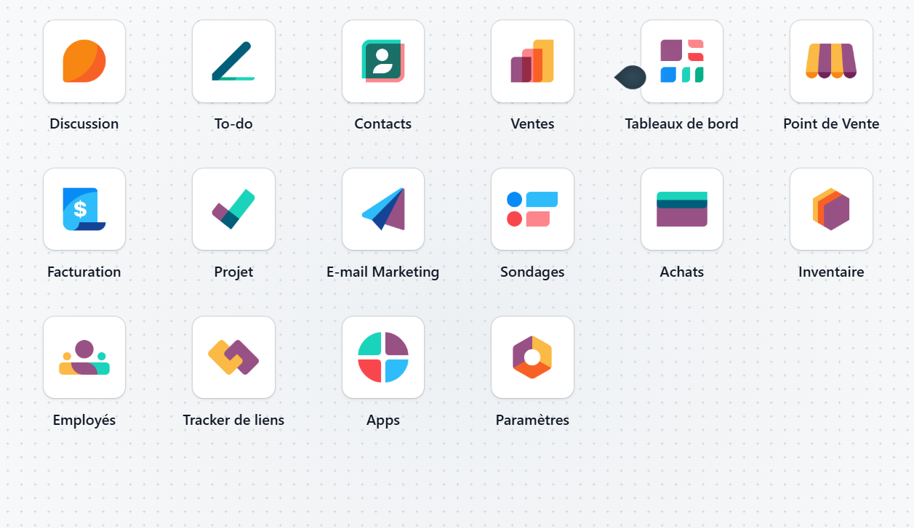
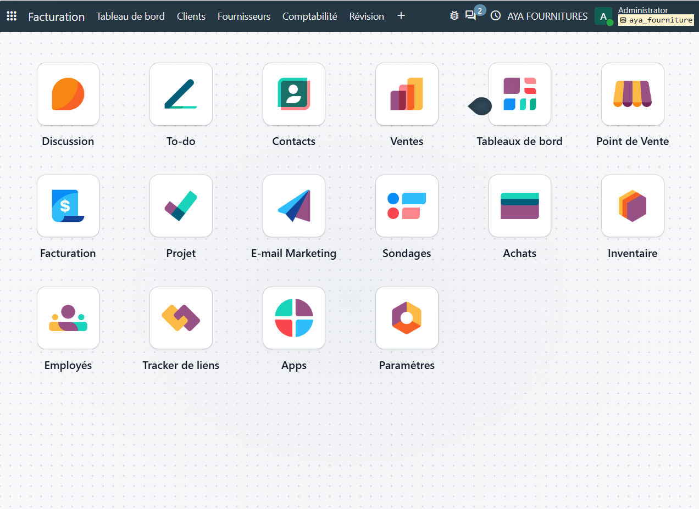

DIGITEN SARL · ODOO 20 COMMUNITY
A polished workspace for daily operations. A subtle cross-pattern background, a centered application launcher and refined backend styling.
FREE · LGPL-3 · BUILT ON MuK BACKEND THEME
White icon cards, readable labels and a light grey cross pattern keep your application launcher clean and easy to scan.

The launcher integrates with the existing navigation. Responsive layouts, refined buttons and improved form and list spacing complete the theme.

Real screenshots supplied by the installation owner. Applications and icons shown depend on installed modules and access rights; they are not included in this theme.
For an earlier release with a different technical name: back up the database, uninstall only the earlier styling extension, keep MuK installed, then install this module. Do not enable both styling extensions together.
Published by DIGITEN SARL under LGPL-3. MuK components remain authored by MuK IT. This visual extension provides no Enterprise applications or license.
This is an independent Community theme, not an official Odoo Enterprise product. Odoo is a trademark of its respective owner.
Contact: idiallo@digitensarl.com